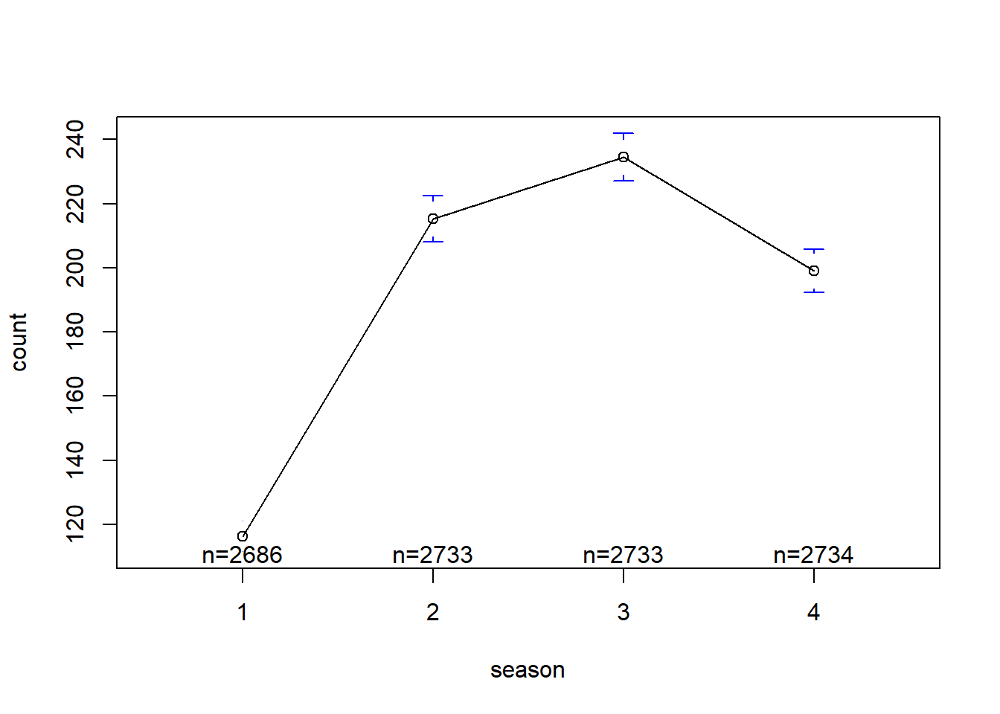
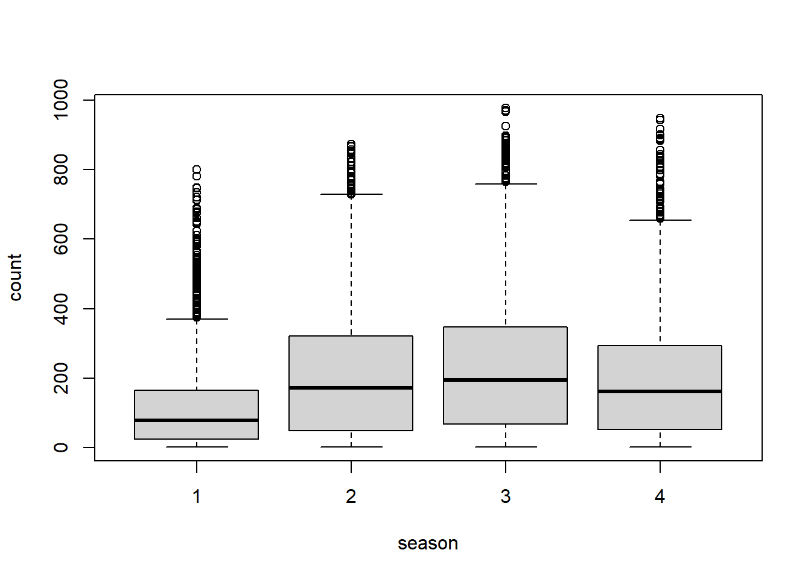

df<- read.csv('./train.csv', header = T)
library(gplots)
Attaching package: 'gplots'The following object is masked from 'package:stats':
lowessplotmeans(count~season, data=df)Warning in arrows(x, li, x, pmax(y - gap, li), col = barcol, lwd = lwd, : zero-
length arrow is of indeterminate angle and so skippedWarning in arrows(x, ui, x, pmin(y + gap, ui), col = barcol, lwd = lwd, : zero-
length arrow is of indeterminate angle and so skipped
boxplot(count~season, data=df)